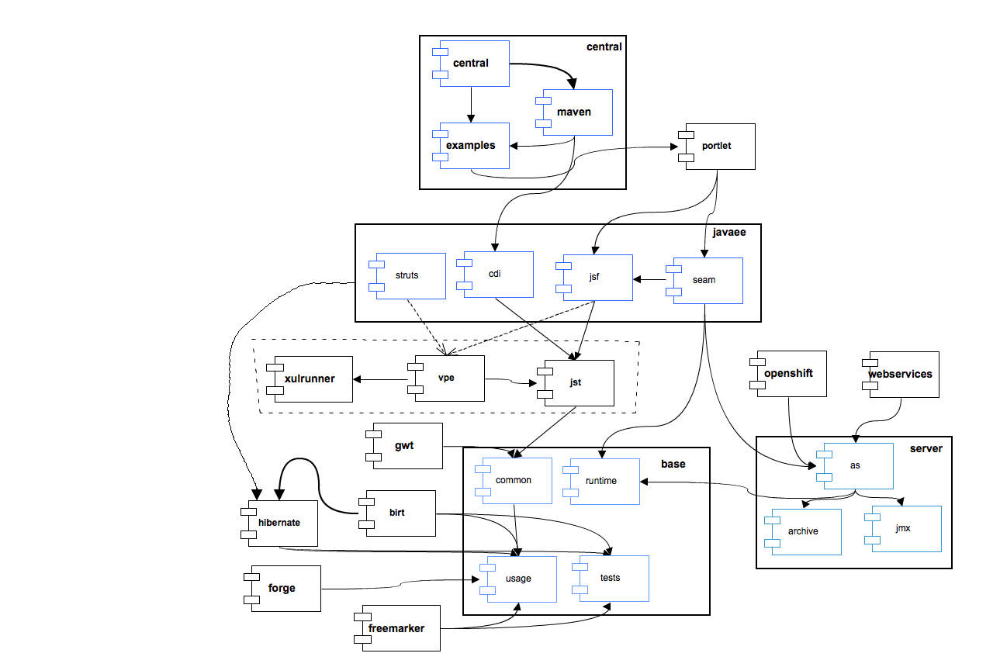

| Project | Bootstrapped By | Depends On |
|---|---|---|
| Central | Portlet | Portlet, JavaEE, VPE, XulRunner, JST, Server, Base |
| Portlet | JavaEE | JavaEE, VPE, XulRunner, JST, Server, Base |
| JavaEE | VPE, Hibernate | VPE, XulRunner, JST, Server, Hibernate, Base |
| VPE | XulRunner, JST | XulRunner, JST, Server, Base |
| XulRunner | -- | -- |
| JST | Server* | Server*, Base |
| OpenShift | Server | Server, Base |
| WebServices | Server | Server, Base |
| BIRT | Hibernate | Hibernate, Base |
| Hibernate | Base | Base |
| Server | Base | Base |
| GWT | Base | Base |
| Forge | Base | Base |
| Freemarker | Base | Base |
| Base | -- | -- |
| Project | Bootstrapped By | Depends On |
| SOA Runtime Detection |
Central | Central, Portlet, JavaEE, VPE, XulRunner, JST, Server, Base |
| BPEL | Server | Server, Base |
| ESB | Base | Base |
| JBPM | Base | Base |
|
JST does not actually depend on Server, but in order to prevent the same dependency chain from appearing more than once (JavaEE -> Base, JST -> Base) and causing duplicate GAVs in the Tycho/Maven reactor, bootstrap profiles are as noted above. | ||
